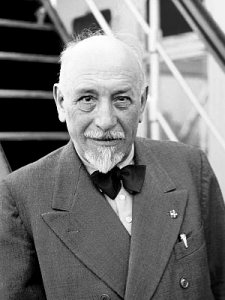
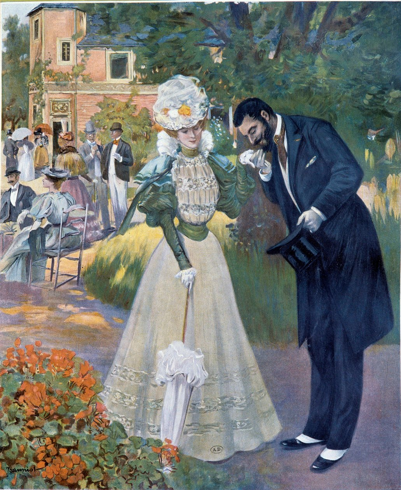

Luigi Pirandello
1867 — 1936 · Premio Nobel 1934
Drammaturgo e narratore siciliano, Pirandello domina la scena letteraria del primo Novecento con il suo relativismo conoscitivo: la realtà non esiste in forma assoluta, ognuno la percepisce in modo diverso. Celebre è la distinzione tra umorismo e comicità: l'"avvertimento del contrario" diventa "sentimento del contrario" quando, oltre a ridere, comprendiamo la tragedia sottostante.
Ogni individuo indossa maschere diverse a seconda del contesto sociale: l'io è fluido, contraddittorio e impossibile da fissare. Nel teatro pirandelliano la quarta parete si rompe, i personaggi invadono la scena e il confine tra finzione e realtà svanisce.
Testi analizzati: Così è (se vi pare) · La patente · La vecchia imbellettata (da L'umorismo) · Il treno ha fischiato · Il naso di Moscarda (da Uno, Nessuno, Centomila) · Pascal di fronte alla sua tomba (da Il fu Mattia Pascal)

La Belle Époque
La Belle Époque (1871-1914) è il periodo di pace e prosperità che l'Europa visse tra la fine della guerra franco-prussiana e lo scoppio della Prima Guerra Mondiale. Fu un'epoca di grandi trasformazioni: l'industrializzazione accelerò, nacquero nuove tecnologie (automobile, cinema, telefono) e le città si modernizzarono.
Tuttavia la "bella epoca" era tale solo per le classi agiate: sotto la superficie crescevano tensioni sociali, nazionalismi e disuguaglianze che avrebbero portato al conflitto mondiale. Fu anche il contesto storico in cui fiorirono i movimenti culturali come il Decadentismo.
Pallavolo: Teoria e Pratica
La pallavolo sviluppa coordinazione, riflessi e spirito di squadra. Abbiamo approfondito i fondamentali individuali (palleggio, bagher, schiacciata e battuta) e le tattiche di squadra: dalla ricezione all'alzata fino all'attacco, con focus sul fair play e sul gioco collettivo.

Oscar Wilde and Aestheticism
1854 — 1900 · British Aestheticism
Wilde is the greatest representative of British Aestheticism, built on the principle "Art for Art's Sake": art must have no moral or utilitarian purpose — it exists only for itself and the beauty it creates. His life was marked by dazzling success in London's social circles, then a tragic ending: convicted of homosexuality and sentenced to hard labour, he emerged broken in both health and career.
In The Picture of Dorian Gray (1890), young Dorian makes an implicit wish: the marks of time and moral corruption never touch his face, but are transferred onto the portrait painted by Basil Hallward. The novel explores the obsession with beauty and the split between outward appearance and inner reality.
Texts studied: The Picture of Dorian Gray · "I would give my soul" (extract from the novel)